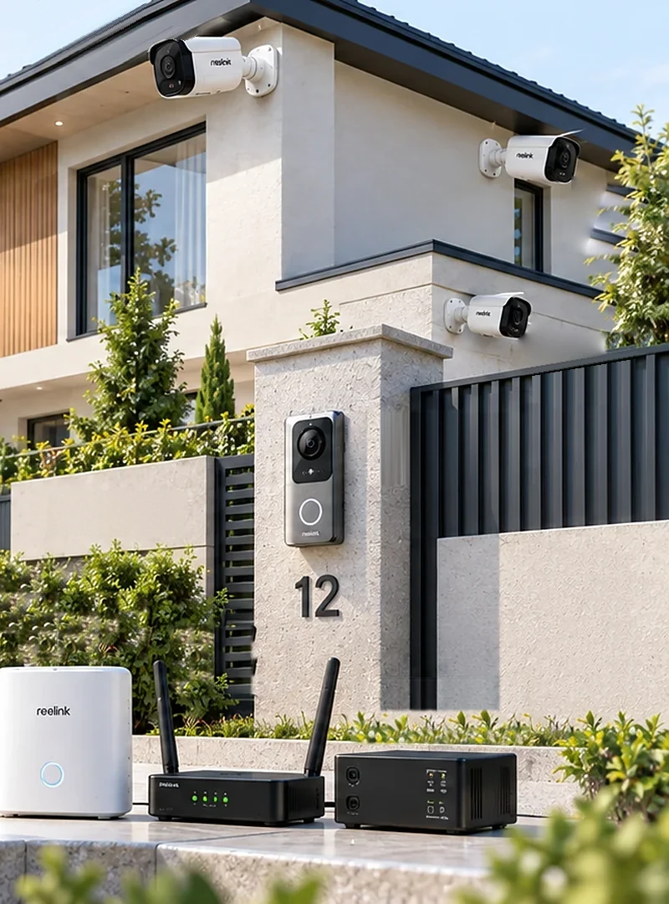
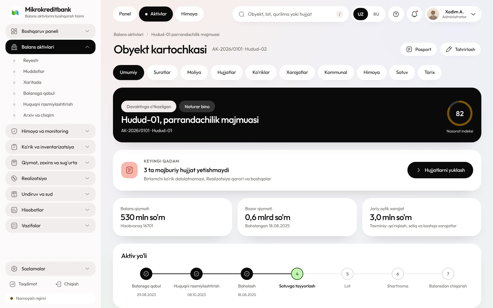

Kabel tortilmaydi, shtrobalanmaydi, obyektga elektr kiritilmaydi. Butun quvvat masalasi ikkita doim yoqiq qurilmaga — Home Hub va 4G routerga — qisqaradi, kameralar esa o'z akkumulyatorida qishni o'tkazadi.
156 Vt·soathub va router sutkasiga
27 kun100 Vt panel bilan zaryadsiz
−10 °Ckameraning quyi chegarasi
8,0–11,5 mln so'much kamerali obyekt

Uchta kamera, video domofon, Home Hub va 4G router — kabel tortilmagan obyekt
01
Qutida nima keladi
Komplekt ikki qismga bo'linadi va ularni aralashtirmaslik kerak: kamera tomoni butunlay avtonom, markaz tomoni esa sutka bo'yi tok talab qiladi. Smetaning ham, nosozlikning ham og'irligi ikkinchi qismda.
Qism
Nima qiladi
Ta'minoti
Dona
Argus seriyasidagi batareyali kamera
PIR uyg'otganda yozadi, qolgan vaqtda uxlaydiOdam va mashinani ajratadi, tungi rangli tasvir
Ichki 5 000 mA·soat akkumulyator va 6 Vt quyosh paneli
2–4
Home Hub
Kameralarni yig'adi, yozuvni saqlaydi, RTSP va ONVIF ni ochadiKamera o'zi uchinchi tomon protokolini bermaydi
12 V / 1 A, sutka bo'yi yoqiq
1
Video domofon
Eshik oldidagi chaqiruv va ikki tomonlama gaplashish
Batareyali yoki 12 V, modelga qarab
0–1
Ikki SIM'li 4G router
Hub'ni bank tarmog'iga chiqaradi, tunnelni ushlab turadi
12 V DC, sutka bo'yi yoqiq
1
LiFePO4 12 V 100 A·soat va MPPT kontroller
Hub va routerni quvvat bilan ta'minlaydiBMS 0 °C dan past haroratda zaryadni to'xtatadi
1,28 kVt·soat, 100 Vt panel bilan
1
Taqsimlash bloki va qulflanadigan quti
Saqlagichlar, ochilish datchigi, kabel kiritish
—
1
Kamera va domofon uchun alohida quvvat liniyasi yotqizilmaydi. Shkafdan chiqadigan yagona kuchlanish — hub va routerga boradigan 12 V.
Kameralarning o'zi RTSP ham, ONVIF ham bermaydi: bu protokollar faqat Home Hub orqali ochiladi. Hub — komplektning majburiy bo'g'ini, uni «tejash» mumkin emas.
02
Dekabr kuni va tuni: soat bo'yicha
Toshkentda 21-dekabrda quyosh 07:50 da chiqib, 17:15 da botadi va peshinda ufqdan atigi 25° ko'tariladi. Panel foydali tokni kuniga olti-yetti soat beradi, qolgan o'n yetti soat butun yuklama akkumulyatorda turadi.
Ustunlar — 100 Vt panelning dekabrdagi soatlik unumi; uzuq qizil chiziq — hub va routerning to'xtovsiz iste'moli. Quyosh nuri bor vaqtda ham panel yuklamadan yuqori turadigan oraliq atigi to'rt-besh soat.
17:15 — 07:50
Tunda tizim nima qiladi
Hub uchala kameraning Wi-Fi seansini ushlab turadi va microSD'ga yozadi (bitta hub sakkiztagacha kamerani ko'taradi), router esa tunnelni tirik saqlaydi. Kameralar uxlaydi: PIR harakat sezgunicha ular energiya olmaydi. Harakat bo'lsa kamera 0,6 soniyada uyg'onadi, 20 soniya yozadi va yana uxlaydi.
Harorat
−4 °C dagi akkumulyator
Dekabr tunlarida Toshkentda harorat odatda −2…−6 °C ga tushadi, sovuq to'lqinda −12 °C gacha. Kameraning litiy-ion akkumulyatori bu haroratda sig'imining chorak qismini vaqtincha yo'qotadi — yo'qotish qaytariladi, kunduzi harorat ko'tarilgach sig'im tiklanadi.
08:40 — 15:40
Kunduzi panel qancha beradi
100 Vt panel dekabrda sutkasiga 113 Vt·soat beradi: 1,62 kVt·soat/m² insolyatsiya, 0,7 koeffitsiyent (burchak, chang, issiqlik va kontroller yo'qotishlari). Shundan 61 Vt·soat darhol yuklamaga ketadi, 52 Vt·soat akkumulyatorga yig'iladi.
Kamera hisobi
Kamera panelsiz ham yetadi
Argus akkumulyatori 5 000 mA·soat, ya'ni taxminan 18,5 Vt·soat. Kutish rejimida kamera 20 mVt atrofida oladi, har hodisa esa 0,011 Vt·soat. Kuniga o'ttiz hodisada bu sutkasiga 0,8 Vt·soat — 6 Vt li kichik panel buni yozda ham, qishda ham qoplaydi.
03
Dekabr quvvat balansi
Hisob eng qorong'i oydan boshlanadi. Iyul raqamiga tuzilgan komplekt yanvarda uch kunda o'chadi, shuning uchun quyidagi jadvaldagi har bir qator dekabr holatiga hisoblangan.
Iste'mol
Vt
Vt·soat/sutka
Home Hub
2,5–4,0
60–96
4G router, ikki SIM
2,5–4,0
60–96
DC-DC va kontroller yo'qotishi
0,3–0,6
7–14
Hisobga olinadigan o'rtacha
6,5
156
Manba
Dekabr
Iyun
100 Vt panel, Vt·soat/sutka
113
532
12 V 100 A·soat LiFePO4, foydali
1 150 Vt·soat
1 150 Vt·soat
Sutkalik balans
−43
+376
Zaryadsiz avtonomiya
27 kun
cheksiz
Panelsiz variantda o'sha akkumulyator 156 Vt·soatlik yuklamada 7,4 kun yetadi: brigada obyektga haftada bir marta boradi, ya'ni yiliga 52 tashrif. Panel bu raqamni 12 ga tushiradi va besh yilda o'z narxidan olti barobar ko'p tejaydi.
LiFePO4 blokning BMS'i 0 °C dan past haroratda zaryadni to'xtatishi shart. Bu funksiya yo'q blokni sovuq kunda quyosh kontrolleri zaryadlaydi va akkumulyator bir qishda qaytarib bo'lmaydigan darajada sig'imini yo'qotadi.
04
Kameradan platformagacha: to'rt bo'g'in
Operator SIM-kartaga oq IP bermaydi, shuning uchun ulanishni har doim obyekt tomoni boshlaydi. Bankning tashqi perimetrida bu yechim uchun birorta port ochilmaydi.
Yo'lda beshta chegara bor va ularning uchtasi bank ixtiyoridan tashqarida: kameraning Wi-Fi radiusi, LTE qoplamasi va operatorning NAT'i. Bank nazorat qiladigan yagona joy — tunnelning ikki uchi: obyektdagi router va DMZ'dagi konsentrator. Shuning uchun ulanishni har doim obyekt boshlaydi, bankning tashqi perimetrida esa bu yechim uchun birorta port ochilmaydi.
Video
RTSP oqimi
Hub ikki oqim beradi: asosiysi operator kattalashtirganda, qo'shimchasi panelda. Kanal raqami URL'da birdan, API javobida noldan boshlanadi — adapter bu farqni o'zi hisobga oladi.
Adapter avval TCP push'ni kutadi; kanal ko'tarilmasa besh soniyalik so'rovga o'tadi. Holat so'rovi kamerani uyg'otmaydi — hub oxirgi ma'lum holatni o'zi qaytaradi.
GET /api.cgi?cmd=GetMdState&channel=0
GET /api.cgi?cmd=GetAiState&channel=0
→ people, vehicle, dog_cat
Adapter chiqishi
Platforma brendni bilmaydi
Qaysi kamera turgani adapterdan narida ahamiyatsiz: platformaga har doim bir xil o'nta maydonli yozuv keladi. Xom javob alohida jadvalda o'ttiz kun saqlanadi va API'ga chiqmaydi.
Obyekt kartasi bitta ekranda turadi: kameralar holati, akkumulyator foizi, aloqa sifati va oxirgi hodisalar. Operator shu yerdan jonli oqimni ochadi, klipni ko'rikka biriktiradi va servis vazifasini yaratadi.

Obyekt kartasi. Qurilmalar bo'limida har bir kamera o'z batareya foizi, oxirgi aloqa vaqti va signal darajasi bilan turadi.
Amal
Qanday bajariladi
Cheklov
Jonli video
So'rov bo'yicha, hub kamerani uyg'otadi
Bir seans taxminan 5 daqiqa, keyin kamera uyquga qaytadi
Arxivdan klip
Hodisa vaqti bo'yicha hub microSD'sidan olinadi
Kartaning hajmi va yozuv rejimiga bog'liq
Ovoz va sirena
Ikki tomonlama gaplashish, tashqi sirena chiqishi
Uzoq gaplashish kamera akkumulyatorini tez bo'shatadi
Eshikni ochish
Alohida 12 V kirish kontrolleri orqali, jurnalga yozib
Reolink'da rele chiqishi yo'q, kontroller alohida olinadi
Qurilma holati
Batareya foizi, Wi-Fi darajasi, oxirgi aloqa
Holat so'rovi kamerani uyg'otmaydi
Qo'riqqa qo'yish
Bu yechimda yo'q
Rejim boshqaruvi kerak bo'lsa — Yechim 05
06
O'rnatish: bir kun, ikki kishi
Uch kamerali obyekt tajribali brigadada to'rt-olti soatda topshiriladi. Birinchi obyektda sakkiz soatga rejalashtiriladi: hub sozlamasi va tunnel bir marta yig'iladi, keyingi obyektlarda shablon ko'chiriladi.
Brigada
Ikki kishi
Qo'riqlash signalizatsiyasi montaji litsenziyasiga ega montajchi va tarmoq muhandisi. Litsenziyasiz bajarilgan ish sug'urta hodisasida to'lovni rad etish asosi bo'lishi mumkin, shuning uchun litsenziya nusxasi shartnomaga ilova qilinadi.
Mahkamlash
Beton yoki g'isht, 2,6–3,2 m
Kronshteyn uchta 6×40 dyubel bilan qo'yiladi. Gips-karton va pardoz qatlamiga mahkamlanmaydi: kamera og'irligi kichik bo'lsa ham, shamol va qorda kronshteyn bo'shaydi va kadr siljiydi.
Ko'rish burchagi
PIR yon harakatni yaxshi ko'radi
Datchik yo'lakni kesib o'tayotgan odamni ishonchli aniqlaydi, to'g'ri kelayotganini kechroq. Kamera yo'lakka 30–45° burchak ostida qaratiladi, sensor maydoniga daraxt shoxi va bayroq tushmasligi tekshiriladi.
1
Har kamera uchun Wi-Fi darajasi o'lchanadi va dalolatnomaga yoziladi. −75 dBm dan past bo'lsa hub ko'chiriladi yoki kamera joyi o'zgartiriladi.
2
4G signal ikki operatorda o'lchanadi. RSRP va SINR qiymati qog'ozga tushadi, kuchliroq operator asosiy SIM sifatida qo'yiladi.
3
12 V shinada kutish toki ampermetr bilan o'lchanadi: hisobdagi 6,5 Vt 0,54 amperga to'g'ri keladi. O'lchov 0,65 amperdan oshsa, hub yoki router sozlamasi tekshiriladi va avtonomiya qaytadan hisoblanadi. Qiymat dalolatnomaga yoziladi.
4
RTSP oqimi obyektdan turib ochiladi va tunnel orqali bank tomonida takrorlanadi. Ikkala tekshiruv o'tmaguncha brigada obyektni tark etmaydi.
5
Sinov hodisasi yaratiladi: montajchi kadr oldidan o'tadi, hodisa platformada ko'rinishi va klip ochilishi tasdiqlanadi.
6
Har qurilmaga QR-yorliq yopishtiriladi va reyestrda obyektga bog'lanadi. Yorliqsiz qurilma keyingi inventarizatsiyada «egasi yo'q» bo'lib qoladi.
07
Smeta: uch kamerali obyekt
Narxlar 2026-yil bozor kuzatuvi bo'yicha, bitta obyekt uchun. Reolink O'zbekistonda rasmiy kanal orqali kelmaydi, shuning uchun har qator sotuvchining taklifi bilan qayta tekshiriladi.
Qator
Narxni nima belgilaydi
mln so'm
Home Hub
Model va microSD uyalari soni
1,2–1,5
3 ta batareyali kamera
Ruxsat, tungi rangli tasvir, ikki obyektiv
4,5–6,0
4G router
Ikkinchi SIM uyasi va tashqi antenna chiqishi
0,5–0,8
LiFePO4 100 A·soat, kontroller, panel
Past harorat himoyasi bor BMS, MPPT va panel quvvati
1,2–2,0
Montaj va sozlash
Balandlik, devor materiali, obyektgacha masofa
0,6–1,2
Jami
Bir obyekt, o'rnatish bilan
8,0–11,5
Narxni nima ko'taradi
Akkumulyator va panel, kamera emas
Kamera qo'shish smetaga 1,5–2,0 mln so'm qo'shadi va quvvat balansini deyarli o'zgartirmaydi. Avtonomiyani bir haftadan bir oyga cho'zish esa panel va sig'imni to'rt barobar kattalashtiradi va smetaning eng qimmat qatorini hosil qiladi. Shuning uchun xarid sharti zaryadsiz kun soni bilan o'lchanadi.
Valyuta
Kurs qatorning yarmiga ta'sir qiladi
Hub, kamera va router import qilinadi: ularning so'mdagi narxi kursga bevosita bog'langan. Akkumulyator, panel, kronshteyn va ish haqi mahalliy. Shartnomada narx qaysi kunning kursida qotirilishi va necha kun amal qilishi aniq yoziladi.
08
Kim sotadi, kim o'rnatadi
Reolink O'zbekistonga rasmiy distribyutorsiz keladi: nosoz hub almashtirilguncha 3–6 hafta o'tadi va shu vaqtda obyekt butunlay ko'r qoladi. Kafolat va almashtirish fondi shartnomada alohida yoziladi.
Kim
Nimani beradi
Nimaga e'tibor
Import va marketpleys sotuvchilari
Hub, kamera, quyosh paneli
Kafolat sotuvchining zimmasida; xizmat markazi yo'q
BMS past harorat himoyasi hujjatda ko'rsatilgan bo'lsin
Mobil operator, korporativ bo'lim
M2M yoki VPN paketli SIM
Obyekt hududida qamrov o'lchab tasdiqlanadi
Tenderning texnik sharti to'rtta o'lchanadigan talabdan iborat bo'ladi: zaryadsiz avtonomiya kunlari, ishlash harorati, RTSP va ONVIF ning ochiqligi, mikrodastur versiyasini qotirish imkoni. Brend nomi yozilsa taklif bittadan keladi; o'lchov yozilsa uchta-to'rttadan keladi va narx solishtiriladigan bo'ladi.
09
Besh yil: servis va sarf materiallari
Boshlang'ich xarajat taxminan 10 mln so'm, besh yillik jami 20–28 mln so'm. Farqning katta qismi — obyektga borish: har tashrifda yo'l, vaqt va ikki kishining ish haqi hisoblanadi.
Nima
Qachon
Besh yilda, mln so'm
4G SIM, trafik
Oyiga 50–100 ming so'm
3,0–6,0
Zaryadlash va ko'rik tashrifi
Panel bilan oyiga bir marta, besh yilda 60 tashrif
5,7–9,7
microSD karta
3-yilda almashtiriladi
0,4–0,8
Kamera akkumulyatori
4–5-yilda, sig'im 70% dan tushganda
0,9–1,5
LiFePO4 blok
Besh yil ichida almashtirilmaydi
0
Mikrodastur yangilanishi
Yiliga bir-ikki marta, avval sinov hub'ida
ish vaqti
Bir tashrif — yo'l, ikki kishining yarim kuni va transport: shahar ichida 95 ming so'mdan, viloyat tumanida 160 ming so'mgacha. Aniq stavka servis shartnomasida qotiriladi va besh yillik jami shundan keyin qayta hisoblanadi.
Obyekt balansda o'rtacha bir yil turadi, jihoz esa qoladi. Bitta komplekt besh yilda uch-to'rt obyektga ko'chsa, bir obyektga yiliga 5–7 mln so'm to'g'ri keladi — bu 1 mlrd so'mlik omborning yillik mol-mulk solig'idan kam.
10
Uchta buzilish yo'li
Quyidagi uchtasi laboratoriya farazlari emas: har biri obyektni bir kechada ko'r qoldiradi va har birining oldini oladigan aniq chora bor.
Nosozlik 1
Sovuqda kamera javob bermay qoladi
Kamera −10 °C, hub −10 °C gacha e'lon qilingan. Sovuq to'lqinda tashqi devordagi kamera avval kadrni yo'qotadi, keyin butunlay uzilib qoladi va zaryadni ham qabul qilmaydi.
Nima qiladiKamera ayvon tagiga yoki bino ichiga, oynadan emas, tirqishdan qaratib qo'yiladi; hub isitiladigan xonaga. Ochiq perimetr kerak bo'lsa bu yechim tanlanmaydi — Yechim 02 yoki 03 olinadi.
Nosozlik 2
Hub o'chsa, hamma kamera ko'rinmay qoladi
Kameralar o'zi RTSP bermagani uchun hub yagona chiqish nuqtasi. Saqlagich kuyishi, 12 V ulagichning bo'shashi yoki akkumulyatorning to'liq razryadi — uchalasi ham bir xil natija beradi.
Nima qiladiAdapter hub'ni har 60 soniyada so'raydi va uch javobsizlikdan keyin «aloqa yo'q» hodisasini ochadi. Akkumulyator zaryadi 25% ga tushganda platforma servis vazifasini o'zi yaratadi. Shkafga ochilish datchigi qo'yiladi.
Nosozlik 3
Kamera bilan hub orasidagi Wi-Fi yo'qoladi
Metall darvoza, temir-beton devor va ombordagi javonlar signalni yeydi. Daraja −75 dBm dan pastga tushganda kamera qayta ulanishga urinaveradi va uch oyga mo'ljallangan zaryadni bir sutkada tugatadi.
Nima qiladiMontajda har kamera uchun signal darajasi o'lchanadi va dalolatnomaga yoziladi. Platforma darajani kuzatadi: ketma-ket uch sutka pasaysa, ko'rik rejasiga kiritiladi. Zarur bo'lsa hub ko'chiriladi yoki Wi-Fi kengaytirgichi qo'yiladi.
11
Balansdagi qaysi obyektga mos
Yechim ikki cheklov bilan yashaydi: kamera sovuqni ko'tarmaydi va doimiy video bermaydi. Shu ikkisi mos obyektlar ro'yxatini aniq chizadi.
Mos keladi
Shahar ichidagi kvartira, hovli-joy va dala hovlisi: devor issiq, 4G kuchli, obyekt ko'rikka tez-tez ochiladi.
Savdo do'koni va savdo pavilyoni: kirish bitta, ichki harorat nolga tushmaydi.
Ofis bloki va idora binosi — sotuvga qo'yilgan, lekin isitish saqlangan obyektlar.
Xaridor tez-tez keladigan obyekt: video domofon va ikki tomonlama ovoz aynan shu yerda ish beradi.
Mos kelmaydi
Ochiq perimetr, hovli va uzoq ombor: kamera qishni tashqarida o'tkaza olmaydi.
Isitilmaydigan don ombori va sovutkichli ombor: harorat hub chegarasidan past.
Uzluksiz yozuv talab qilinadigan obyekt: batareyali kamera 24 soat yozmaydi.
Yuz tanish talab qilinadigan kirish: biometrik ma'lumot uchun mahalliy server va boshqa sinf jihoz kerak.
4G qamrovi zaif viloyat nuqtasi: hub bilan router doimiy qayta ulanib, quvvatni behuda sarflaydi.
12
Sotuvchiga xarid oldidan beriladigan savollar
Javoblar yozma olinadi va tender hujjatiga ilova qilinadi. Birinchi to'rttasiga aniq javob bermagan sotuvchi bilan ishlashning ma'nosi yo'q.
Kafolatni kim beradi va xizmat markazi qayerda?Nosoz hub necha kunda almashtiriladi va almashtirish fondi shartnomada bormi.
Hub va kameraning datasheet'ida ishlash hamda zaryad harorati alohida ko'rsatilganmi?Rasmiy hujjatda ikkita alohida oraliq bo'lsin; og'zaki «−10 °C gacha ishlaydi» qabul qilinmaydi.
RTSP va ONVIF hub'da yoqilganmi va qaysi mikrodastur versiyasida?Shartnoma imzolashdan oldin sinov stendida VLC bilan ochib ko'rsatilsin.
Mikrodastur versiyasini qotirib qo'yish mumkinmi?Avtomatik yangilanish API buyruqlarini o'zgartirsa, adapter kechasi bilan ishdan chiqadi.
microSD sanoat sinfidami, TBW ko'rsatkichi qancha?Uzluksiz yozuvda oddiy karta bir yilni ko'tarmaydi.
Bitta obyektda ikkita hub ishlay oladimi?Kamera soni sakkiztadan oshsa nima bo'lishi oldindan aniqlanadi.
Kameraning almashtiriladigan akkumulyatorini alohida sotib olsa bo'ladimi?Sig'im tushganda butun kamera emas, batareya almashtirilsin.
Narx qaysi kunning kursida va necha kun amal qiladi?Import qatorlar smetaning yarmidan ko'pini tashkil qiladi.
13
Boshqa yechimlar bilan yonma-yon
Bir obyektga bitta yechim tanlanadi va tanlovni obyektning issiqligi, perimetri va yozuv talabi belgilaydi.